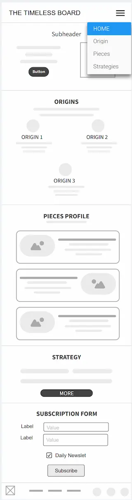
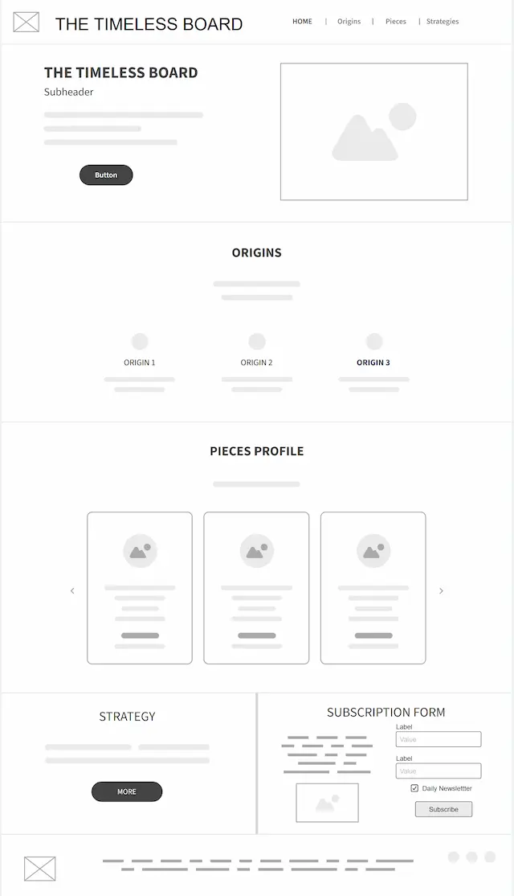

Site Name: The Timeless Board
This name perfectly embodies the enduring appeal of chess, a game cherished and played for centuries. It evokes a sense of classic elegance, strategic depth, and sophistication, mirroring the timeless essence of the game itself.
Site Purpose
“The Timeless Board” aims to create an online hub for chess enthusiasts. The site will provide educational resources such as strategy guides, puzzles, and a membership information form.
Scenarios
-
Scenario 1: "Where did chess originate, and how has the game evolved over time?"
The site will offer a detailed section exploring the various origin stories of chess, tracing its history from ancient civilizations to the modern game. Users will also find information about the cultural impact of chess around the world.
-
Scenario 2: "What are the roles and strategic importance of each chess piece?"
The website will provide in-depth profiles on each chess piece, explaining their movement, strengths, weaknesses, and how they contribute to different strategies. Users can learn how each piece plays a crucial role in winning a game.
-
Scenario 3: "I'm a beginner at chess. How can I learn the basic strategies to start winning
games?"
There will be a section dedicated to beginner strategies, offering step-by-step guides on how to control the board, develop pieces efficiently, and think ahead to outsmart opponents. Interactive tutorials will also be available to practice key concepts.
Color Schema
- Primary Color:
Letters and some dark Backgrounds.
rgb(0, 0, 0) - Secondary Color:
Letters.
rgb(236, 243, 242) - Accent Color 1:
Backgrounds, mostly for titles.
rgb(24, 0, 146) - Accent Color 2:
Details for aesthetic.
rgb(7, 111, 28)
Typography
- Headings: Roboto
- Paragraphs: Roboto
Project's home page wireframes
-
Mobile view  -
Desktop view 